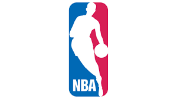
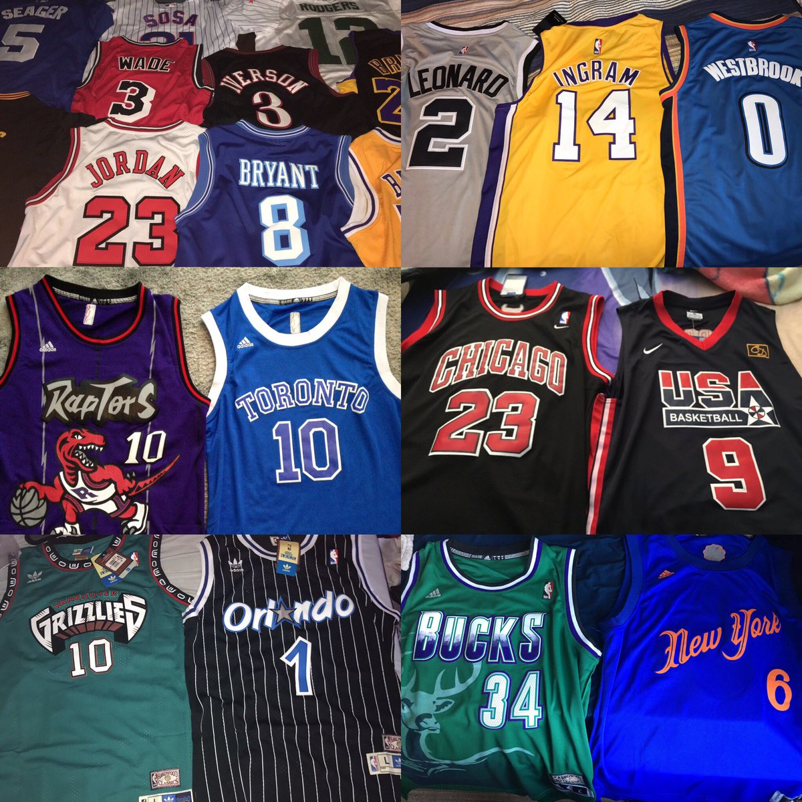
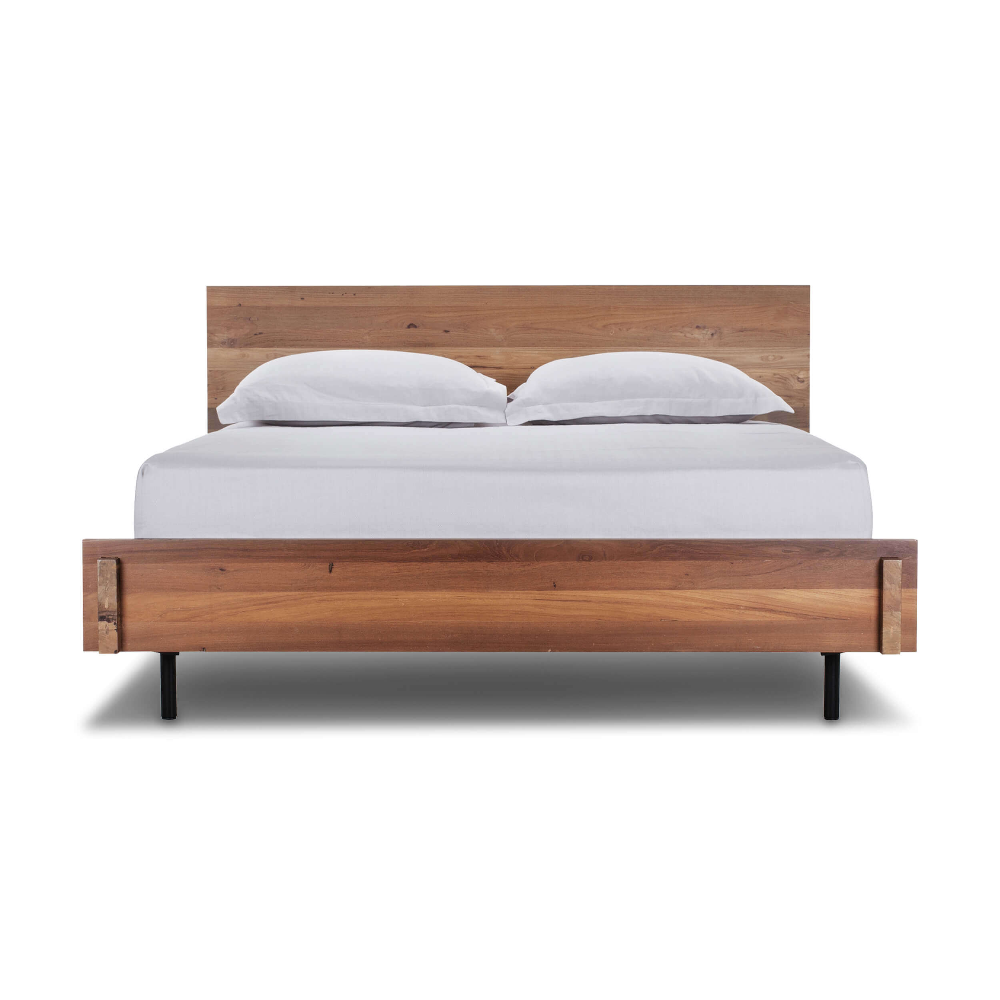

NBA
The NBA is one of my favorite things because there are games almost every night and I love to play and watch basketball.
Houston Rockets
The Houston Rockets are one of my favorite things because I have been a huge fan of them since I started watching the NBA.

Jerseys
Jerseys are on my top 5 list because jerseys represent your team and it is always nice to see another fan of your favorite team.
Music
Music is one of my favorite things as well because music can get you in a good mood and your music is who you are.

Sleep
Sleep is on my top 5 because sleep is important, and I feel really great after I get some good sleep.
